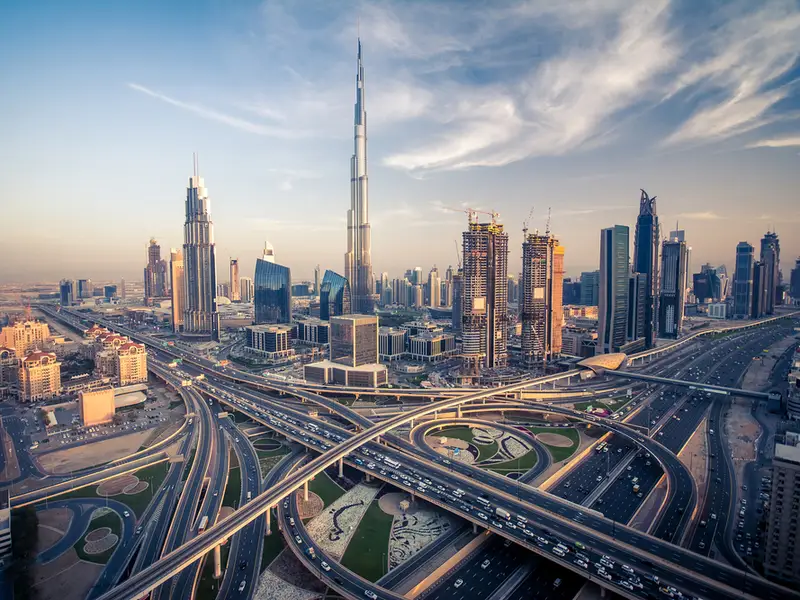
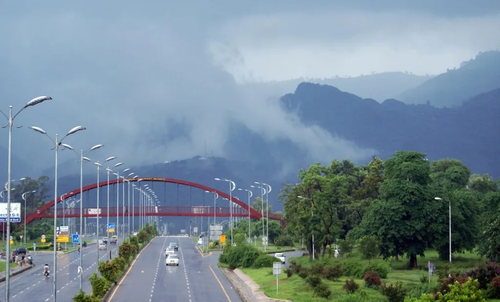

My Favourite Cities
Florence
Florence is synonymous with the Italian Renaissance, known for the artistic heritage in its palaces and museum collections. Yet with all the beauty both inside and outside its palazzi's walls, it is the city as a whole that impresses the most. See it from Piazzale Michelangelo, a 19th century terrace overlooking the entire city, and you'll be looking at one of the most storybook-perfect cityscapes. You'll see its unspoiled skyline, the towers and domes of the heart of the city, its bridges, the hills in the distance, and the magnificent Duomo standing in the middle of it all.

Dubai
Dubai's futuristic skyline features the tallest building in the world, the Burj Khalifa. Watersports at Kite Beach and desert camel rides can also be accessed via the busy metropolis.

Cape Town, South Africa
The natural beauty in and around Cape Town provides many opportunities to enjoy the outdoors at places like Table Mountain National Park, Boulders Beach, and the Cape of Good Hope.

Islamabad, Pakistan
Pakistan has the most striking, must-visit cultural, religious and historic sites in Pakistan, from Lahore to Karachi to Islamabad. However, the capital city of Pakistan indeed takes top honours for being the most beautiful and amazing city. But what makes Islamabad so different, stunning and unique is that the capital city is blessed with breathtaking natural wonders alongside great infrastructure which is an added attraction for the foreigners and tourists. This is what makes an incredibly attractive and exciting place to visit.